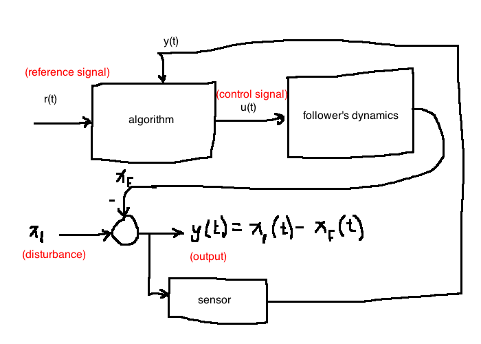
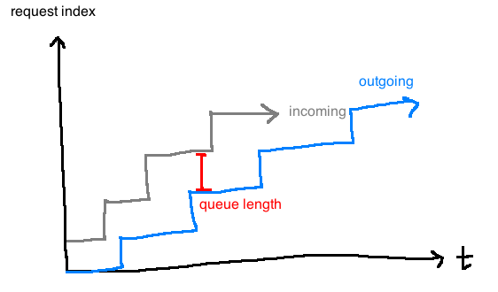

Objective:
- decide on the velocity commands to the follower in order to maintain a safe inter-vehicle distance
Assumptions:
- cars only move forward and reverse on flat ground
- through software running on an embedded computer, we can assign different velocities to the follower
- Model for follower: \frac{df(t)}{dt} = u(t), where we decide u(t)
- Leader moves at a constant but unknown speed
Solution 1: Open loop
Don‚Äôt equip follower with any sensors (save that money üí∞)
algorithm to decide velocity only has access to the desired inter-vehicle distance, labelled r(t)
open loop
Since the algorithm has no access to y(t), it can’t make an informed decision
Toasters work like this (doesn’t sense toast burntness, just goes for a set time)
Solution 2: Closed Loop
equip the follower with sensors that can measure y(t)
closed loop
Simplest control algorithm
u(t) = -K_p (r(t) - y(t)), \quad K_p \gt 0
Better control algorithm: proportional-integral error feedback
Web server that responds to GET and POST requests from browsers
The server has a buffer of pending requests so no requests are lost
web server
Control objectives
Don’t let the queue length get too large (buffer may overflow and requests will be lost)
Don’t let queue length get to zero (it would be a waste of resources to have the server idle)
Consequently, we want to keep the queue length at some known value r(t).
The difficulty is that the service rate is not known, as it depends on many things (e.g. number of clients). Because of this, we will model it as a disturbanced(t).
We must decide on the request rateu(t) based on r(t) and y(t) (queue length).
web server block
Definition
Control engineering attempts to change the behaviour of a system (called a “plant”) in a useful way despite the presence of external influences (“disturbances”) and despite model uncertainty.
We change the behaviour of the plant by connecting it to another system (“controller”).
Feedback is the most powerful interconncetion strategy.
Control Cycle
Sense the operation of a system
Compare against a desired behaviour
Compute a correctibe action informed bu a model of the sustem’s respnse to external stimuli
Actuate the sustem to affect the desired change
The sense, compute, actuate cycle loops.
Design Cycle
Study the system to be controlled, decide on sensors and actuators. Sensors change what information is at your disposal, and actuators represent choices you can make in response to the inputs.
Model the resulting system [CH2]
Mathematical model
Often one or more differential equations e.g. follower \frac{dx_f}{dt}(t) = u(t)
Obtained through analysis or experimental data [CH4]
Simplify model if necessary
Classical control (this course, most common) deals with linear, time-invariant systems. It requires that we have a transfer function (input-output) model of the plant.
e.g. \mathcal{L}\left\{\frac{dx_f}{dt}\right\} = \mathcal{L}\{u\} \Rightarrow sX_f(s) - x_f(0) = U(s). Transfer function is \frac{X_f(s)}{U(s)} = \frac{1}{s}.
A system has a transfer function iff it is linear and time-invariant.
Analyze the model [CH3/4]
Determine design specifications: stability [CH3/5], good steady-state behaviour [CH5], robustness [CH8/9], good transient performance [CH4/5/7/8/9]
Decide on the type of controller [CH5/7/9]
Design the controller
In this course, we design LTI controllers, the controller itself has a transfer function
This transfer function corresponds to a differential equation relating the inputs and outputs of the controller
eg: followers: proportional integral controller \frac{U(s)}{E(s)} = -K_p + K_i\frac{1}{s}
Simulate (usually using Matlab, Octave & Scilab)
Return to step 1 if necessary
Implement controller
it is possible to build circuits that have the same transfer function as the controller from step 7
More ealistically, the Ordinary Differential Equation (ODE) from step 7 is discretized and approximated as a difference equation and implemented in software